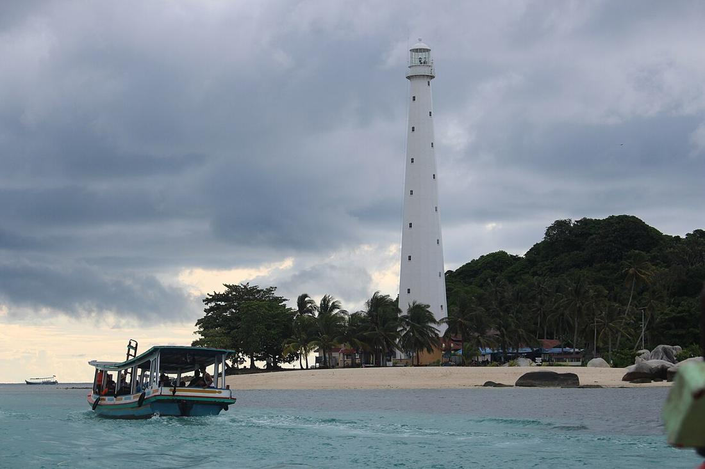

Pulau Lengkuas dan Mercusuar Tua Penjaga Selat
Pulau kecil di utara Belitung yang terkenal dengan mercusuar besi peninggalan Belanda, air jernih, dan gugusan granit.

Dari Pantai Tanjung Kelayang, perahu-perahu kecil rutin membawa wisatawan menyeberang ke sebuah pulau mungil dengan menara putih yang menjulang. Itulah Pulau Lengkuas, salah satu ikon wisata bahari paling terkenal di Belitung.
Menara besi dari abad ke-19
Perairan di sekitar Pulau Lengkuas sejak abad ke-19 menjadi jalur kapal dagang. Masalahnya, gugusan batu granit di sekitar pulau membuat jalur ini berbahaya. Untuk itu pemerintah kolonial Belanda membangun mercusuar berangka besi di pulau ini. Dinas Pariwisata Kabupaten Belitung mencatat tahunnya 1882.
Sebuah artikel sejarah mercusuar dari Belanda (Vuurtorens in Nederland, 2023) memberi detail tambahan. Pemasangan menara di "Poeloe Langkoeas" dimulai pada Agustus 1881, dan lampunya pertama kali dinyalakan pada Februari 1883. Menurut tulisan yang sama, menara ini termasuk sekelompok mercusuar besi tuang enam belas sisi rancangan Quirinus Harder di Hindia Belanda. Jadi angka 1882 yang sering disebut berada di tengah masa pembangunan itu.
Hingga kini mercusuar tersebut masih berfungsi sebagai alat bantu navigasi bagi kapal yang melintas di Selat Karimata dan perairan Belitung.
Asal nama yang masih jadi cerita
Dinas Pariwisata menyebut nama "Lengkuas" dipercaya berasal dari tanaman lengkuas yang dulu banyak tumbuh di pulau ini. Ada juga versi lain yang beredar di masyarakat. Karena belum ada catatan tertulis yang memastikan, anggap saja ini bagian dari cerita pulau yang menarik untuk diobrolkan di atas perahu.
Yang bisa dinikmati
- Naik ke puncak mercusuar. Pengunjung bisa menaiki ratusan anak tangga dan melihat laut lepas, pulau-pulau kecil, serta hamparan granit dari ketinggian.
- Snorkeling. Airnya jernih, dan terumbu karang serta ikan tropis bisa dilihat tanpa menyelam terlalu dalam.
- Foto lanskap. Perpaduan pasir putih, air biru kehijauan, dan batu granit bikin hampir setiap sudut layak difoto.
Kapan sebaiknya datang?
Dinas Pariwisata menyarankan bulan April sampai Oktober, saat cuaca cenderung cerah dan laut lebih bersahabat. Berangkatlah pagi, sekitar pukul 08.00–10.00, supaya penyeberangan dari Tanjung Kelayang lebih nyaman sebelum matahari terlalu terik.
Bawa air minum, pakai pelindung matahari yang ramah terumbu karang, dan jangan injak karang saat snorkeling. Mercusuar ini sudah menjaga pelaut selama lebih dari satu abad, dan kita yang datang sebagai tamu ikut menjaga pulaunya.
Sumber: lihat daftar sumber di bawah. Tulisan ini disusun ulang oleh tim iTAP Belitung.
Sumber
- dispar.belitung.go.id/lengkuas-island/
- vuurtorensinnederland.nl/wp-content/uploads/2023/11/2023-3-Vuurtoren-Pulau-Lengkuas-en-de-
- www.openstreetmap.org/way/1352492133
Ditulis ulang oleh tim iTAP Belitung dari sumber di atas. Ada yang keliru? Kabari kami lewat Kirim kabar atau email putraanandateguh@gmail.com.